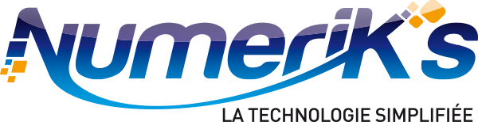

Mes Entreprises
Les entreprises dans lesquelles j'ai travaillé
Webqam
Agence web stéphanoise très sympatique composée de développeurs, infographistes et chefs de projets.
15 Rue de la Presse, 42000 St-EtienneWebqam est une agence web créée en 2005 et composée d’une quinzaine de développeurs, environ cinq infographistes et tout autant de chefs de projets. La principale activité de cette entreprise est la création de sites, des sites vitrines faits avec Wordpress ou Laravel, des sites d’e-commerce etc. Lors de mon passage, une partie de l’équipe de développeurs travaillaient également sur des petits jeux pour la FDJ ou encore des opérations sponsorisées pour la coupe du monde de football. Les sites vitrines sont la plupart du temps administrables directement par les clients, cependant ces derniers demandent généralement un suivi sur un an, ainsi les développeurs et infographistes peuvent maintenir le site et/ou ajouter des nouvelles fonctionnalités. Les développeurs sont situés dans un open-space, les chefs de projet dans une salle juste à côté pour pouvoir intervenir directement avec les développeurs. Les infographistes se trouvent dans une autre salle à quelques mètres, celle-ci est également utilisée pour les « Coffee Talk » : c’est une mini réunion impliquant toute l’équipe où l’on échange sur les nouveautés de Webqam. Dans cette salle on peut également, comme certains l’ont fait pendant les matchs de la France, regarder la télévision ou jouer à des jeux-vidéos.
De mon expérience, j’ai surtout participé à la maintenance de sites sous Wordpress sous la tutelle de plusieurs chefs de projets. J’ai pu voir que la plupart des développeurs travaillaient sur la création de sites, j’en tire donc la conclusion que les clients sont assez nombreux et cherchent toujours à améliorer leur site. Je ne parlerai pas de la partie infographie, comme je ne les ai que très peu côtoyés. Je sais simplement qu’ils ne s’occupent pas forcément de projets en lien direct avec Webqam et peuvent faire d’autres travaux pour des organismes extérieurs.
PSM Numeriks
Point de vente et réparation de produits éléctroniques avec des employés accuillants.
12 Cours Romestang, 38200 ViennePSM Numerik’s est un point de vente et de réparation créée en 2004 et dont le siège social est à Bourgoin Jallieu. Cette entreprise vend tous types d’outils technologiques allant de la simple clé USB, à l’ordinateur fixe ou portable en passant par les accessoires pour smartphones. En plus de cela, la société permet aux clients de laisser leurs appareils électroniques pour les réparer en cas de casse ou de panne. L’équipe est composée à Vienne de 4 personnes, la gérante du magasin qui s’occupe d’accueillir les clients et de les renseigner, ainsi que de 3 autres personnes qui s’occupent en général de l’accueil des clients mais plus particulièrement de la réparation et de l’entretien des appareils. Pour parler plus précisément du travail de dépannage, la réparation des grosses machines se passe malheureusement à la vue des clients à l’avant de la boutique ; la réparation de téléphones ou autres appareils plus petits se passe à l’arrière-boutique où les techniciens manipulent des outils et des pièces assez petites.
L’an dernier lors de mon stage, j’ai appris une facette plus commerciale de ce que je faisais avant. De plus j’ai pu également manipuler des téléphones portables et ordinateurs afin de procéder à un diagnostic et après à la réparation ou au changement d’une pièce.